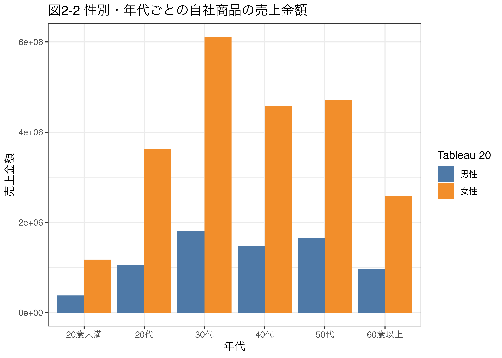
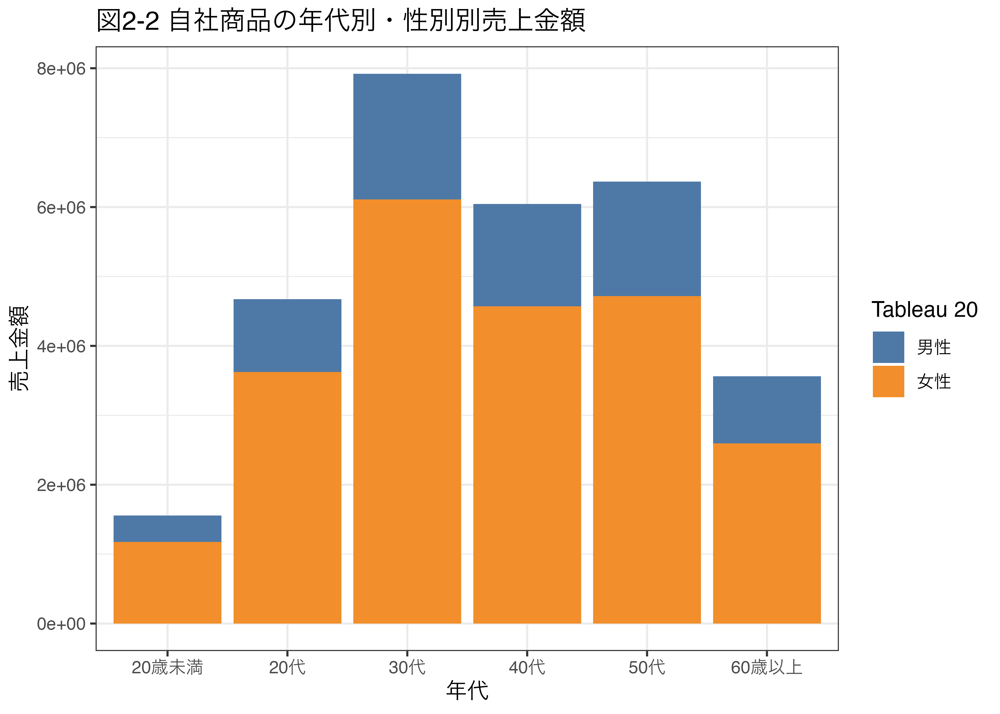
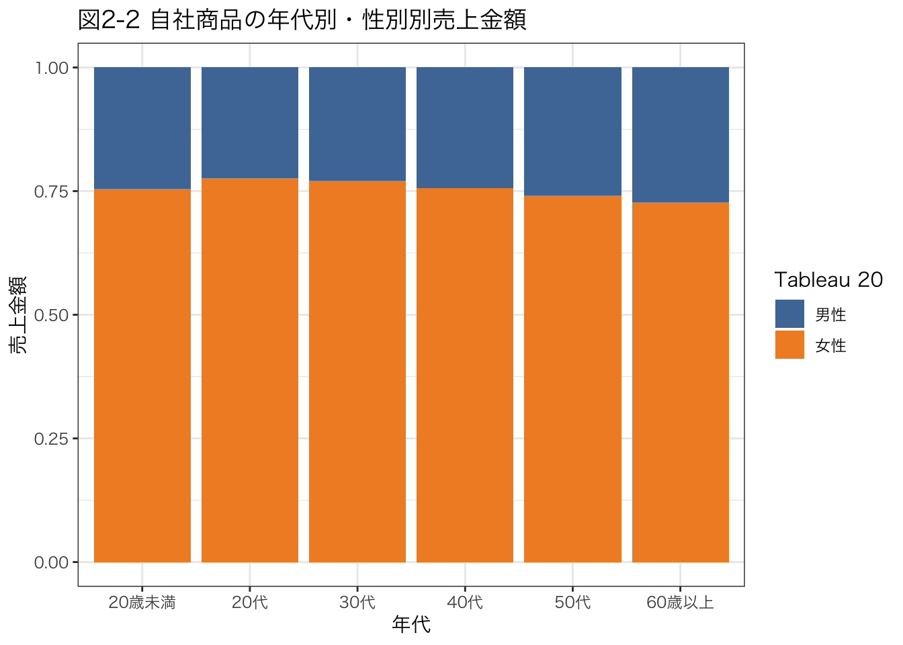
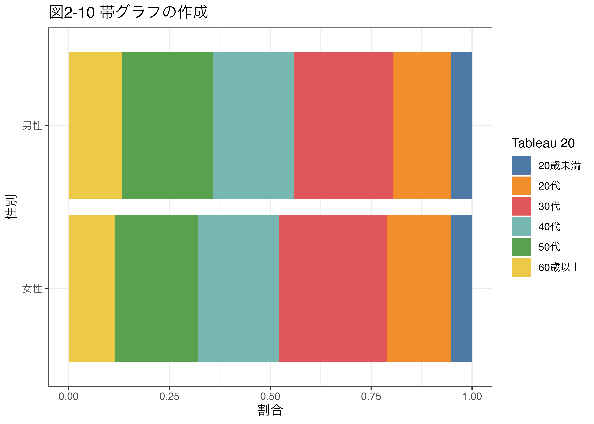
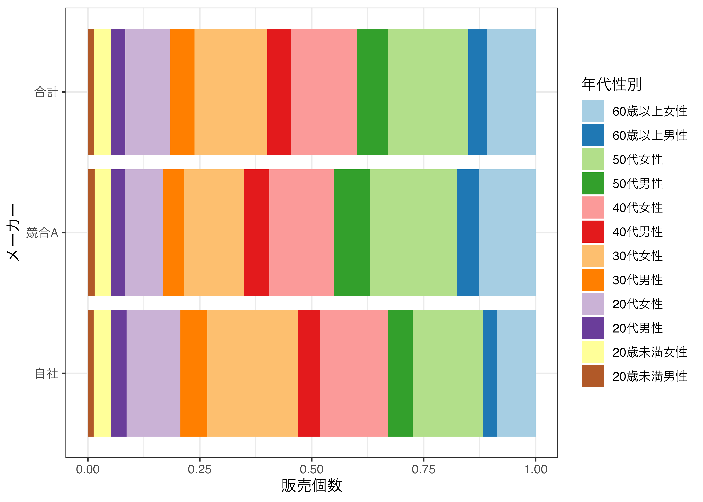

pacman::p_load(tidyverse, readxl, ggthemes, gt, gtExtras)2 第2回 顧客層別の売上
2.1 はじめに
年代ごとの客層に違いがあるのかや、自社と他社の顧客層に違いがあるのかを調べる方法を学ぶ。 クロス表の作成方法やカイ二乗検定の方法を学びます。
2.2 この章で使うファイルとパッケージ
第2回ファイルで使うデータはchp2.xlsxです。
chp2.xlsx
パッケージを読み込みます。
readxlパッケージを使ってデータchp2.xlsxを読み込んでみましょう。 前章と同様にこのExcelファイルのシートの一覧を表示してみます。
readxl::excel_sheets("data/chp2.xlsx")[1] "いつものPOSデータ" "ピボットテーブル" "表2-2・図2-2"
[4] "表2-3・図2-4" "表2-4・表2-5・図2-12" "表2-6・図2-13"
[7] "表2-7・図2-14" "表2-8・表2-10・検定" "表2-11・表2-12・検定"第1章のデータと同じでした。 「いつものPOSデータ」を読み込みたいので，特に指定せずにread_excel()関数を使って読み込みます。 ついでに文字列をカテゴリー変数として因子型に変換しておきます。
df <- readxl::read_excel("data/chp2.xlsx")
df <- df %>%
mutate(曜日 = factor(曜日, levels = c("月", "火", "水", "木", "金", "土", "日"), ordered = TRUE),
性別 = factor(性別, levels = c("男性", "女性"), ordered = TRUE),
年代 = factor(年代, levels = c("20歳未満", "20代", "30代", "40代", "50代", "60歳以上"), ordered = TRUE),
メーカー = as.factor(メーカー),
商品名 = as.factor(商品名))
head(df) # 戦闘6行を表示| レシート番号 | 日付 | 曜日 | 時間 | 性別 | 年代 | メーカー | 商品名 | 単価 | 個数 | 金額 |
|---|---|---|---|---|---|---|---|---|---|---|
| R000001 | 2023-01-02 | 月 | 10 | 女性 | 30代 | 競合A | おいしい緑茶 | 160 | 2 | 320 |
| R000001 | 2023-01-02 | 月 | 10 | 女性 | 30代 | 競合B | 静岡の緑茶 | 170 | 2 | 340 |
| R000002 | 2023-01-02 | 月 | 10 | 男性 | 60歳以上 | 競合B | 静岡の緑茶 | 170 | 4 | 680 |
| R000002 | 2023-01-02 | 月 | 10 | 男性 | 60歳以上 | 競合A | おいしい濃茶 | 160 | 2 | 320 |
| R000003 | 2023-01-02 | 月 | 10 | 男性 | 50代 | 競合C | ほうじ茶 | 140 | 1 | 140 |
| R000004 | 2023-01-02 | 月 | 10 | 女性 | 50代 | 競合D | ウーロン茶 | 140 | 2 | 280 |
2.3 自社商品における購入者の属性を調べる
2.3.1 セグメンテーション
顧客を属性で分類することをセグメンテーションといいます。 年代や性別といったセグメントごとの顧客の特徴を調べてみます。
まずは自社商品におおける年代別と性別ごとの販売個数を計算してみましょう。
df_jisha_age_sex_num <- df |>
filter(メーカー == "自社") |> # 自社商品のみ抽出
group_by(年代, 性別) |> # 年代と性別ごとに
summarise(販売個数合計 = sum(個数)) |> # 個数を合計
ungroup() # グループ化解除`summarise()` has grouped output by '年代'. You can override using the
`.groups` argument.df_jisha_age_sex_num| 年代 | 性別 | 販売個数合計 |
|---|---|---|
| 20歳未満 | 男性 | 2540 |
| 20歳未満 | 女性 | 7838 |
| 20代 | 男性 | 6979 |
| 20代 | 女性 | 24164 |
| 30代 | 男性 | 12075 |
| 30代 | 女性 | 40730 |
| 40代 | 男性 | 9826 |
| 40代 | 女性 | 30477 |
| 50代 | 男性 | 11000 |
| 50代 | 女性 | 31457 |
| 60歳以上 | 男性 | 6464 |
| 60歳以上 | 女性 | 17291 |
表が出力されましたが，いわゆる「ロング型」となっているため，表示に適した教科書のようなワイド型に変換してみましょう。 ついでに教科書のように，年代別合計を列に，性別ごとの合計を行に追加します。これが以外に面倒です。
total_sex <- df_jisha_age_sex_num |>
group_by(性別) |> # 性別ごとに
summarise(合計 = sum(販売個数合計)) |> # 個数を合計
pivot_wider(names_from = 性別, values_from = 合計) |> # ワイドに
mutate(年代 = "合計") |> # 年代に"合計"を追加
ungroup() # グループ化解除
df_jisha_age_sex_num |> # ワイドに
pivot_wider(names_from = 性別, values_from = 販売個数合計) |>
rbind(total_sex) |> # 合計の行を追加
mutate( # 合計の列を追加
合計 = 女性 + 男性
) |>
gt() |>
fmt_number(columns = 2:4, decimals = 0) |>
tab_header(title = "表2-1 性別・年代ごとの購入回数をまとめてクロス集計表")| 表2-1 性別・年代ごとの購入回数をまとめてクロス集計表 | |||
|---|---|---|---|
| 年代 | 男性 | 女性 | 合計 |
| 20歳未満 | 2,540 | 7,838 | 10,378 |
| 20代 | 6,979 | 24,164 | 31,143 |
| 30代 | 12,075 | 40,730 | 52,805 |
| 40代 | 9,826 | 30,477 | 40,303 |
| 50代 | 11,000 | 31,457 | 42,457 |
| 60歳以上 | 6,464 | 17,291 | 23,755 |
| 合計 | 48,884 | 151,957 | 200,841 |
年代と性別の多重クロス表が完成しました。 販売個数ではなく，売上金額の表にしたい場合は，summarise(売上合計 = sum(金額))とすればよいです。
df_jisha_sale_age_sex <- df |>
filter(メーカー == "自社") |>
group_by(性別, 年代) |>
summarise(
売上合計 = sum(金額)
) |>
ungroup()`summarise()` has grouped output by '性別'. You can override using the
`.groups` argument.df_jisha_sale_age_sex |>
pivot_wider(names_from = 性別, values_from = 売上合計) |>
gt() |>
fmt_number(columns = 2:3, decimals = 0) |>
tab_header(title = "表2-2 性別・年代ごとの自社商品の売上金額")| 表2-2 性別・年代ごとの自社商品の売上金額 | ||
|---|---|---|
| 年代 | 男性 | 女性 |
| 20歳未満 | 381,000 | 1,175,700 |
| 20代 | 1,046,850 | 3,624,600 |
| 30代 | 1,811,250 | 6,109,500 |
| 40代 | 1,473,900 | 4,571,550 |
| 50代 | 1,650,000 | 4,718,550 |
| 60歳以上 | 969,600 | 2,593,650 |
2.3.2 棒グラフによる可視化
可視化するため，棒グラフにしてみる。 geom_col()関数で棒グラフを描画し，position = "dodge"で性別ごとに横並びの棒グラフにします。
df_jisha_sale_age_sex |>
ggplot() + aes(x = 年代, y = 売上合計, fill = 性別) +
geom_col(position = "dodge") +
labs(title = "図2-2 性別・年代ごとの自社商品の売上金額",
x = "年代",
y = "売上金額") +
theme_bw(base_family = "HiraKakuPro-W3") +
scale_fill_tableau(name = "Tableau 20")
積み上げ棒グラフにするなら，position = "stack"を指定します。
df_jisha_sale_age_sex |>
ggplot() + aes(x = 年代, y = 売上合計, fill = 性別) +
geom_col(position = "stack") +
labs(title = "図2-2 自社商品の年代別・性別別売上金額",
x = "年代",
y = "売上金額") +
theme_bw(base_family = "HiraKakuPro-W3") +
scale_fill_tableau(name = "Tableau 20")
合計を1とした割合を示す積み上げ棒グラフにするなら，position = "fill"を指定します。
df_jisha_sale_age_sex |>
ggplot() + aes(x = 年代, y = 売上合計, fill = 性別) +
geom_col(position = "fill") +
labs(title = "図2-2 自社商品の年代別・性別別売上金額",
x = "年代",
y = "売上金額") +
theme_bw(base_family = "HiraKakuPro-W3") +
scale_fill_tableau(name = "Tableau 20")
売上個数のグラフも作成してみます。
df |>
filter(メーカー == "自社") |>
group_by(年代, 性別) |>
summarise(販売個数 = sum(個数)) |>
ggplot() + aes(x = 年代, y = 販売個数, fill = 性別) +
geom_col(position = "dodge") +
labs(title = "図2-4 性別・年代ごとの自社商品の売上個数",
x = "年代",
y = "販売個数") +
theme_bw(base_family = "HiraKakuPro-W3") +
scale_fill_tableau(name = "Tableau 20")`summarise()` has grouped output by '年代'. You can override using the
`.groups` argument.
2.3.3 割合を見る
表2-2の表を見ると，年代ごとの売上金額の合計が異なるため，単純に比較することができません。そこで売上高合計に占める割合を見てみます。
df_jisha_sale_age_sex |>
mutate( # 割合を計算し，小数点以下2桁で丸める
割合 = 売上合計 / sum(売上合計) * 100
) |>
select(年代, 性別, 割合) |> # 必要な列だけ抽出
pivot_wider(names_from = 性別, values_from = 割合) |>
mutate( # 性別ごとの合計を追加
合計 = 女性 + 男性
) |>
gt() |>
fmt_number(columns = 2:4, decimals = 2) |>
tab_header(title = "表2-4 自社商品の売上金額における性別・年代の比率(%)")| 表2-4 自社商品の売上金額における性別・年代の比率(%) | |||
|---|---|---|---|
| 年代 | 男性 | 女性 | 合計 |
| 20歳未満 | 1.26 | 3.90 | 5.17 |
| 20代 | 3.47 | 12.03 | 15.51 |
| 30代 | 6.01 | 20.28 | 26.29 |
| 40代 | 4.89 | 15.17 | 20.07 |
| 50代 | 5.48 | 15.66 | 21.14 |
| 60歳以上 | 3.22 | 8.61 | 11.83 |
次に売上全体に対する割合ではなく，性別ごとの合計に対する割合を示す表を作成してみます。
df_row_ratio <- df_jisha_sale_age_sex |>
pivot_wider(names_from = 性別, values_from = 売上合計) |>
mutate(
女性 = 女性 / sum(女性) * 100,
男性 = 男性 / sum(男性) * 100
) |>
select(年代, 女性, 男性)
df_row_ratio |>
gt() |>
fmt_number(columns = 2:3, decimals = 2) |>
tab_header(title = "表2-5 各性別を100%とした場合の性別に対する年代の比率 (%)")| 表2-5 各性別を100%とした場合の性別に対する年代の比率 (%) | ||
|---|---|---|
| 年代 | 女性 | 男性 |
| 20歳未満 | 5.16 | 5.20 |
| 20代 | 15.90 | 14.28 |
| 30代 | 26.80 | 24.70 |
| 40代 | 20.06 | 20.10 |
| 50代 | 20.70 | 22.50 |
| 60歳以上 | 11.38 | 13.22 |
性別ごとの年代の比率から棒グラフを作成します。
df_row_ratio |>
pivot_longer(cols = c(女性, 男性), names_to = "性別", values_to = "割合") |>
ggplot() + aes(x = 年代, y = 割合, fill = 性別) +
geom_col(position = "fill") +
labs(title = "図2-9 帯グラフの作成",
x = "年代",
y = "割合") +
theme_bw(base_family = "HiraKakuPro-W3") +
scale_fill_tableau(name = "Tableau 20") +
# グラフを横向き
coord_flip()
次に，性別ごとの年代別の割合を見てみます。
df_row_ratio |>
pivot_longer(cols = c(女性, 男性), names_to = "性別", values_to = "割合") |>
ggplot() + aes(x = 性別, y = 割合, fill = 年代) +
geom_col(position = "fill") +
labs(title = "図2-10 帯グラフの作成",
x = "性別",
y = "割合") +
theme_bw(base_family = "HiraKakuPro-W3") +
#カラーパレットを変更
scale_fill_tableau(name = "Tableau 20") +
coord_flip()
2.3.4 年代別・性別ごとの購入者の属性を調べる
df_sales_total <- df |>
dplyr::filter(メーカー == "自社") |>
group_by(年代, 性別) |>
summarise(
売上合計 = sum(金額),
.groups = "drop"
) |>
pivot_wider(names_from = 性別, values_from = c(売上合計))
df_sales_total |>
rowwise() |> # 行ごとに処理
mutate(
# 年代以外の列で，行を合計で割る
across(-年代, ~ . / sum(c_across(-年代), na.rm = TRUE))
) |>
ungroup() |>
gt() |>
fmt_number(columns = 2:3, decimals = 2) |>
tab_header(title = "表2-3 自社商品の年代別・性別別売上金額")| 表2-3 自社商品の年代別・性別別売上金額 | ||
|---|---|---|
| 年代 | 男性 | 女性 |
| 20歳未満 | 0.24 | 0.76 |
| 20代 | 0.22 | 0.78 |
| 30代 | 0.23 | 0.77 |
| 40代 | 0.24 | 0.76 |
| 50代 | 0.26 | 0.74 |
| 60歳以上 | 0.27 | 0.73 |
2.4 2-2 競合商品との属性の違い
競合する商品の売り上げ個数を，性別・年代ごとに集計してみる。
df_maker_age_sex <- df |>
group_by(メーカー, 年代, 性別) |>
summarise(販売個数 = sum(個数), .groups = "drop") |>
ungroup()競合A社の性別・年代ごとの売上個数を見てみる。
df_maker_age_sex |>
filter(メーカー == "競合A")|>
pivot_wider(names_from = 性別, values_from = 販売個数) |>
select(-メーカー) |>
mutate(
合計 = 男性 + 女性
) |>
gt() |>
fmt_number(columns = 2:4, decimals = 0) |>
tab_header(title = "表2-6 年代・性別ごとの競合A社の売上個数")| 表2-6 年代・性別ごとの競合A社の売上個数 | |||
|---|---|---|---|
| 年代 | 男性 | 女性 | 合計 |
| 20歳未満 | 3,964 | 9,813 | 13,777 |
| 20代 | 8,235 | 22,661 | 30,896 |
| 30代 | 12,788 | 35,578 | 48,366 |
| 40代 | 15,132 | 38,297 | 53,429 |
| 50代 | 21,789 | 51,643 | 73,432 |
| 60歳以上 | 13,267 | 33,680 | 46,947 |
棒グラフにしてみる。
df_maker_age_sex |>
filter(メーカー == "競合A")|>
ggplot() + aes(x = 年代, y = 販売個数, fill = 性別) +
geom_col(position = "dodge") +
labs(title = "図2-13 競合A社の年代別・性別別売上個数",
x = "年代",
y = "販売個数") +
theme_bw(base_family = "HiraKakuPro-W3") +
scale_fill_tableau(name = "Tableau 20")
自社と競合A社を比較してみます。
# 自社とA社の比較
df_ji_A_item <- df_maker_age_sex |>
filter(メーカー %in% c("自社", "競合A")) |> # 自社と競合A社のみ抽出
pivot_wider(names_from = メーカー, values_from = 販売個数) |> # ワイド
select(年代, 性別, 自社, 競合A) # 必要な変数のみ選択
# 全体売上個数を計算する
df_total_item <- df |>
group_by(年代, 性別) |> # 年代と性別ごとに
summarise(合計 = sum(個数), .groups = "drop") # 売上個数を合計
# 自社とA社のデータフレームと全体のデータフレームを結合
df_ji_A_item <- df_ji_A_item |>
left_join(df_total_item, by = c("年代", "性別"))
# 作表
df_ji_A_item |>
arrange(性別) |>
group_by(性別) |>
gt() |>
fmt_number(columns = 3:5, decimals = 0) |>
tab_header(title = "表2-7 自社と競合A社の年代・性別別売上個数")| 表2-7 自社と競合A社の年代・性別別売上個数 | |||
|---|---|---|---|
| 年代 | 自社 | 競合A | 合計 |
| 男性 | |||
| 20歳未満 | 2,540 | 3,964 | 9,264 |
| 20代 | 6,979 | 8,235 | 21,738 |
| 30代 | 12,075 | 12,788 | 35,757 |
| 40代 | 9,826 | 15,132 | 35,443 |
| 50代 | 11,000 | 21,789 | 46,809 |
| 60歳以上 | 6,464 | 13,267 | 28,181 |
| 女性 | |||
| 20歳未満 | 7,838 | 9,813 | 24,904 |
| 20代 | 24,164 | 22,661 | 67,154 |
| 30代 | 40,730 | 35,578 | 108,567 |
| 40代 | 30,477 | 38,297 | 97,851 |
| 50代 | 31,457 | 51,643 | 119,413 |
| 60歳以上 | 17,291 | 33,680 | 72,066 |
割合棒グラフにしてみます。
df_ji_A_item |>
pivot_longer(cols = -c(年代, 性別), names_to = "メーカー", values_to = "販売個数") |>
mutate(
年代性別 = paste0(年代, 性別),
年代性別 = factor(年代性別, levels = rev(unique(年代性別))),
メーカー = factor(メーカー, levels = c("自社", "競合A", "合計"))
) |>
select(年代性別, メーカー, 販売個数) |>
ggplot() + aes(x = メーカー, y = 販売個数, fill = 年代性別) + geom_col(position = "fill") +
theme_bw(base_family = "HiraKakuPro-W3") +
#カラーパレットを変更
scale_fill_brewer(palette = "Paired") +
coord_flip()
2.5 統計的推定
統計学において，関心のある調査対象全体を母集団(population)といいます。 通常，母集団は非常に大きいデータであるため，全てのデータを調査することはコストや手間の面で非常に困難です。 母集団の平均や分散といった統計量を母数(parameter)といい，通常母数は観察不可能な値と考えます。
そこで，母集団から一部を抽出して調査することにします。 この母集団から抽出された，母集団より数ケタ小さな一式のデータを標本(sample)といいます。 この標本の平均や分散といった集約した値を統計量(statistic)といい，標本平均や標本分散は計算可能な値です。 統計学では，全体を見ることなく，その一部である標本を見ることで，母集団の特性を推定することを目的としています。
2.6 カテゴリー変数間の関連性の検定
次に，ある特性をもつ2つの集団(カテゴリー)が関連しているかどうかを検定する方法を学びます。 カテゴリーに属するかということを表す変数をカテゴリー変数といいます。 たとえば，男なら1，女なら0といった性別カテゴリーの変数や，20代や50代といった年代に属するかどうかを表すカテゴリー変数があります。 このような2つのカテゴリー変数の関連性を調べるためにはクロス集計表を作ることが有益です。
例えば、1学年400名の生徒うち、男が245名、女が155名いるとしましょう。 その学年の中で、メガネをかけている男が41名、メガネを掛けている女が81名いました。 このクロス集計表は次のようなものになります。
| メガネをかけている | メガネをかけていない | 合計 | |
|---|---|---|---|
| 男 | 41 | 204 | 245 |
| 女 | 81 | 74 | 155 |
| 合計 | 122 | 278 | 400 |
この表から、メガネをかけている人の割合は、男性の中で 41\div 245 = 0.1673469、女性の中で 81 \div 155 = 0.52であることから、女子学生の方がメガネをかけている割合が高いことが分かりました。
2.6.1 カイ二乗検定
このクロス集計表から読み取れる関係が、統計的に意味があるのかどうかを調べるためには、\chi ^2(カイ二乗)検定を行います。 \chi^2検定は次のステップで実行します。
- 帰無仮説として、カテゴリー変数間に関連性はないと仮定
- その仮定のもとで、観測されたクロス集計表の度数が、理論的に予測される度数と大きく異なるかどうかを検定
- 予測される度数と観測された度数の差が大きいほど、帰無仮説が棄却され，対立仮説が採択される
\chi^2検定で用いられる統計量は、\chi^2統計量と呼ばれ、次の式で計算されます。
\chi^2 = \sum_{i=1}^n \sum_{j=1}^m \frac{(O_{ij} - E_{ij})^2}{E_{ij}} ここで、O_{ij}は観測された度数(観測度数)、E_{ij}は理論的に予測される度数(期待度数)です。nとmはカテゴリー変数のカテゴリー数です。 つまり、2つのカテゴリー変数の関連性を調べる場合、\chi^2統計量は次のように計算されます。
\begin{aligned} \chi^2 &= \frac{(O_{11} - E_{11})^2}{E_{11}} + \frac{(O_{12} - E_{12})^2}{E_{12}} \\ &+ \frac{(O_{21} - E_{21})^2}{E_{21}} + \frac{(O_{22} - E_{22})^2}{E_{22}} \end{aligned}
ここで、期待度数Eをどうやって求めるのか、が問題となります。 期待度数の「期待」の意味は、帰無仮説のもとで期待される度数です。
E_{ij} = \frac{O_{i\cdot} \times O_{\cdot j}}{O_{\cdot \cdot}} ここで、O_{i\cdot}はi行目の合計(横の合計)、O_{\cdot j}はj列目の合計(縦の合計)、O_{\cdot \cdot}は全体の合計です。
先のメガネの例で計算してみます。 観察度数Oは次のようになります。
| メガネをかけている | メガネをかけていない | 合計 | |
|---|---|---|---|
| 男 | 41 | 204 | 245 |
| 女 | 81 | 74 | 155 |
| 合計 | 122 | 278 | 400 |
男の行合計O_{男\cdot}は245、女の行合計O_{女\cdot}は155、メガネ有りの列合計O_{\cdot メガネ有}は122、メガネなしの列合計O_{\cdot メガネ無}は278、全体の合計O_{\cdot \cdot}は400となります。 ここから、期待度数は次のように計算されます。
\begin{aligned} E_{男, メガネ} &= \frac{245 \times 122}{400} = 74.725 \\ E_{男, メガネ無} &= \frac{245 \times 278}{400} = 170.275 \\ E_{女, メガネ} &= \frac{155 \times 122}{400} = 47.275 \\ E_{女, メガネ無} &= \frac{155 \times 278}{400} = 107.725 \end{aligned}
よって期待度数Eは次のようになります。
| メガネをかけている | メガネをかけていない | 合計 | |
|---|---|---|---|
| 男 | 74.725 | 170.275 | 245 |
| 女 | 47.275 | 107.725 | 155 |
| 合計 | 122 | 278 | 400 |
ここから、定義通りに、\chi^2統計量を計算します。
\begin{aligned} \chi^2 = \frac{(41 - 74.725)^2}{74.725} + \frac{(204 - 170.275)^2}{170.275} + \frac{(81 - 47.275)^2}{47.275} + \frac{(74 - 107.725)^2}{107.725} = 56.51731 \end{aligned}
ここで計算した\chi^2統計量56.51731は、自由度1の\chi^2分布に従うということが知られています。 この自由度は、カテゴリー変数のカテゴリー数から1を引いたものです。 ここでは、2カテゴリー同士のクロス集計表なので、自由度は(2-1) \times (2-1) = 1となります。
自由度1のカイ二乗分布の確率密度関数は次のようになります。
x = c(1:2500) / 250 # 数列を作成
y1 = dchisq(x,1) # カイ二乗分布の確率密度
df_2 <- data.frame(x, y1) # データフレームを作成
p <- ggplot(df_2) + aes(x = x,y = y1) + geom_line(linewidth = 1) # 折れ線グラフ
p <- p +
scale_y_continuous(expand = c(0,0), limits = c(0,1)) +
scale_x_continuous(expand = c(0,0), limits = c(-0.1,10)) +
ylab("密度") + xlab("カイ二乗値") + ggtitle("自由度1のχ2分布の確率密度") +
theme_bw(base_family = "HiraKakuPro-W3") +
scale_fill_tableau(name = "Tableau 20")
print(p)Warning: Removed 34 rows containing missing values or values outside the scale range
(`geom_line()`).
参考までに、自由度が変わると\chi^2分布の形状は次のようなものになります。
df_chi_graph <- data.frame(
x = c(1:2500) / 250,
y1 = dchisq(x,1), # 自由度1のカイ二乗分布の確率密度
y3 = dchisq(x,3), # 自由度3のカイ二乗分布の確率密度
y5 = dchisq(x,5) # 自由度5のカイ二乗分布の確率密度
)
df_chi_graph <- df_chi_graph %>%
pivot_longer(names_to = "y",values_to = "value",cols = -x) # データを長く整形
p <- ggplot(df_chi_graph) + aes(x = x,y = value, group = y, color = y) # 作図
p <- p + geom_line(linewidth = 1) # 折れ線グラフ
p <- p + ylab("密度") + xlab("カイ二乗値") +
scale_y_continuous(expand = c(0,0), limits = c(0,1)) +
scale_x_continuous(expand = c(0,0), limits = c(-0.1,10))
p <- p + ggtitle("自由度1,3,5のχ2分布の確率密度") +
theme_bw(base_family = "HiraKakuPro-W3") +
scale_fill_tableau(name = "Tableau 20")
print(p)Warning: Removed 34 rows containing missing values or values outside the scale range
(`geom_line()`).
自由度1の\chi^2分布における有意水準5%の値を調べるにはqchisq()関数を使います。引数は、pに確率、dfに自由度を指定します。
alpha <- 0.05 # 有意水準（ここでは5%）
degf <- 1 # 自由度
qchisq(1 - 0.05, 1)[1] 3.841459# qchisq(1 - alpha, degf)自由度1のカイ二乗分布における有意水準5%の値は3.84であることが分かりました。 この値を超えると、有意水準5%で帰無仮説を棄却することになります。
では先程計算した\chi^2統計量は、有意水準5%で帰無仮説を棄却するかどうかを調べてみましょう。
chi2 <- 7.2
qchisq(1 - alpha, degf) < chi2[1] TRUEより、\chi^2統計量は有意水準5%で帰無仮説を棄却することが分かりました。 ちなみに、自由度1のカイ二乗分布の確率密度関数と\chi^2統計量の位置を重ねてみると次のようになります。
df_chi_graph |>
pivot_wider(names_from = "y", values_from = "value") |>
ggplot() + aes(x = x,y = y1) + geom_line(linewidth = 1) +
ylab("密度") + xlab("カイ二乗値") +
scale_y_continuous(expand = c(0,0), limits = c(0,1)) +
scale_x_continuous(expand = c(0,0), limits = c(-0.1,10)) +
geom_vline(xintercept = chi2, linetype = "dashed", color = "red") +
annotate("text", x = chi2, y = 0.1, label = "χ2 statistics", color = "red") +
ggtitle("自由度1のχ2分布の確率密度") + theme_bw(base_family = "HiraKakuPro-W3") +
scale_fill_tableau(name = "Tableau 20")Warning: Removed 34 rows containing missing values or values outside the scale range
(`geom_line()`).
このように、\chi^2統計量は、自由度1のカイ二乗分布のもとで生じる確率は、
1 - pchisq(chi2, df = 1)[1] 0.007290358となり、非常に小さな値であることが分かりました。 つまり、2つのカテゴリー変数の間に関係がない、という帰無仮説の下で、観測された度数が発生することはほぼありえない、ということが言えるので、帰無仮説は棄却され、2つのカテゴリー変数には関係があると結論付けられます。
2.6.2 Rでχ2検定
Rではchisq.test()関数を使ってχ2検定を行うことができます。 引数は、xに度数表、correctに補正を行うかどうか、pに期待度数を指定します。
先ほどの男女とメガネの例をここでも使ってみます。 まずmatrix()関数を使ってクロス集計表を行列として作成します。
O <- matrix(c(41, 81, 204, 74), nrow = 2, ncol = 2)
row.names(O) <- c("男性", "女性")
colnames(O) <- c("メガネ", "メガネなし")
E <- matrix(c(
sum(O[,1])*sum(O[1,])/sum(O), #男眼鏡
sum(O[,1])*sum(O[2,])/sum(O), #男眼鏡無
sum(O[,2])*sum(O[1,])/sum(O), #女眼鏡
sum(O[,2])*sum(O[2,])/sum(O) #女眼鏡無
), nrow = 2, ncol = 2)
print(O) メガネ メガネなし
男性 41 204
女性 81 74print(E) [,1] [,2]
[1,] 74.725 170.275
[2,] 47.275 107.725この観察度数と期待度数から、定義通りに\chi^2統計量を計算してみます。
chi <- ((O[1,1] - E[1,1])^2 / E[1,1]) + #男眼鏡
((O[1,2] - E[1,2])^2 / E[1,2]) + #男眼鏡無
((O[2,1] - E[2,1])^2 / E[2,1]) + #女眼鏡
((O[2,2] - E[2,2])^2 / E[2,2]) #女眼鏡無
print(chi)[1] 56.51731\chi^2 統計量が 56.5173098 となりました。 この \chi^2 統計量が自由度1の \chi^2 分布にしたがう場合，この統計量が得られる確率は次のようになります。
この確率は0.0000000000000055733となり，ほぼゼロであることが分かりました。 よって、2つのカテゴリー変数は無関係である，という帰無仮説は棄却され、2つのカテゴリー変数には関係があると結論付けられます。
ちなみに，上記のようなめんどくさい処理をしなくても，Rにはchisq.test()という関数が用意されています。 chisq.test()は引数として、xに度数表、correctに補正を行うかどうか、pに期待度数を指定します。 補正は行わないので，correctはFALSEとします。 pはデフォルトで等確率となっているので，今回は省略します。
chisq.test(O, correct = FALSE)
Pearson's Chi-squared test
data: O
X-squared = 56.517, df = 1, p-value = 5.571e-14となり，先ほどの結果と一致しました。
各マスに入る度数が少ない場合には、フィッシャーの直接確率検定を使います。
fisher.test(O)
Fisher's Exact Test for Count Data
data: O
p-value = 1.204e-13
alternative hypothesis: true odds ratio is not equal to 1
95 percent confidence interval:
0.1127341 0.2982245
sample estimates:
odds ratio
0.1845096 2.6.3 自社商品の売上個数における性別と年代の差
表2−3のクロス集計表を標本とみなして、この標本から母集団の性別・年代ごとに売上個数の差があるのかどうかを検証します。 ここでは、
- H_0: 性別と年代による売上個数の差はない
- H_1: 性別と年代による売上個数の差はある
この仮説を検定するために、\chi^2検定を行います。 年代別・性別ごとの売上個数のクロス集計表を作成します。
このクロス表から期待度数を計算してみます。 期待度数は，男女別合計と年代別合計を乗して，全体の合計で割ることで求められます。
df_chi2 <- df_chi2 |>
mutate(合計 = 男性 + 女性) |>
mutate(男性期待 = 合計 * sum(男性) / sum(合計),
女性期待 = 合計 * sum(女性) / sum(合計)
) |>
rename(
女性観察 = 女性,
男性観察 = 男性
) |>
select(年代, 女性観察, 男性観察, 女性期待, 男性期待)
df_chi2| 年代 | 女性観察 | 男性観察 | 女性期待 | 男性期待 |
|---|---|---|---|---|
| 20歳未満 | 7838 | 2540 | 7852.031 | 2525.969 |
| 20代 | 24164 | 6979 | 23562.902 | 7580.098 |
| 30代 | 40730 | 12075 | 39952.447 | 12852.553 |
| 40代 | 30477 | 9826 | 30493.390 | 9809.610 |
| 50代 | 31457 | 11000 | 32123.114 | 10333.886 |
| 60歳以上 | 17291 | 6464 | 17973.116 | 5781.884 |
期待度数を計算したデータフレームdf_chi_kitaiを作れたので， 観察された度数df_chi2と期待度数df_chi_kitaiから\chi^2統計量を計算します。
df_chi_test <- df_chi2 |>
pivot_longer(
cols = -年代, # 年代以外の列を長い形式に変換
names_to = c("性別", "種別"), # 新しい列の名前を指定
names_pattern = "(女性|男性)(観察|期待)", # 列名を分割するパターン
values_to = "値" # 値を格納する列の名前
)
df_chi_test| 年代 | 性別 | 種別 | 値 |
|---|---|---|---|
| 20歳未満 | 女性 | 観察 | 7838.000 |
| 20歳未満 | 男性 | 観察 | 2540.000 |
| 20歳未満 | 女性 | 期待 | 7852.031 |
| 20歳未満 | 男性 | 期待 | 2525.969 |
| 20代 | 女性 | 観察 | 24164.000 |
| 20代 | 男性 | 観察 | 6979.000 |
| 20代 | 女性 | 期待 | 23562.902 |
| 20代 | 男性 | 期待 | 7580.098 |
| 30代 | 女性 | 観察 | 40730.000 |
| 30代 | 男性 | 観察 | 12075.000 |
| 30代 | 女性 | 期待 | 39952.447 |
| 30代 | 男性 | 期待 | 12852.553 |
| 40代 | 女性 | 観察 | 30477.000 |
| 40代 | 男性 | 観察 | 9826.000 |
| 40代 | 女性 | 期待 | 30493.390 |
| 40代 | 男性 | 期待 | 9809.610 |
| 50代 | 女性 | 観察 | 31457.000 |
| 50代 | 男性 | 観察 | 11000.000 |
| 50代 | 女性 | 期待 | 32123.114 |
| 50代 | 男性 | 期待 | 10333.886 |
| 60歳以上 | 女性 | 観察 | 17291.000 |
| 60歳以上 | 男性 | 観察 | 6464.000 |
| 60歳以上 | 女性 | 期待 | 17973.116 |
| 60歳以上 | 男性 | 期待 | 5781.884 |